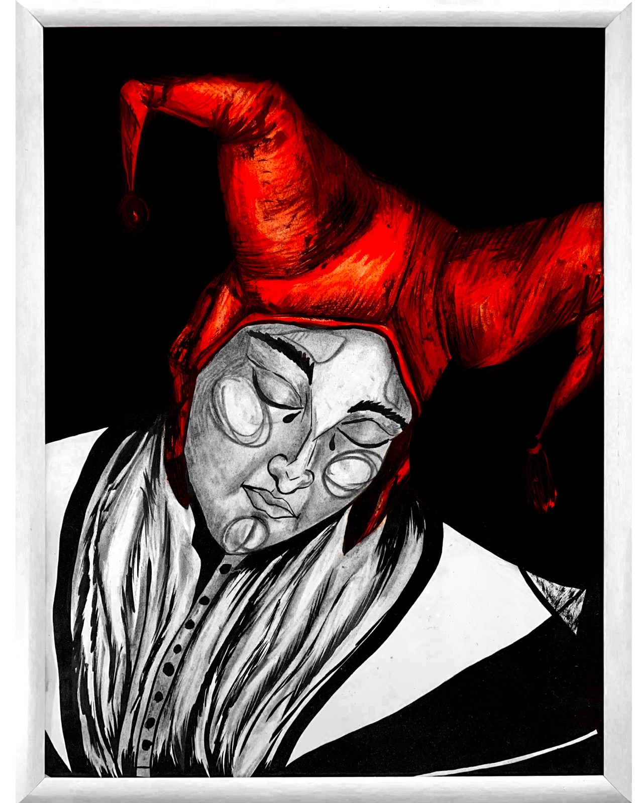
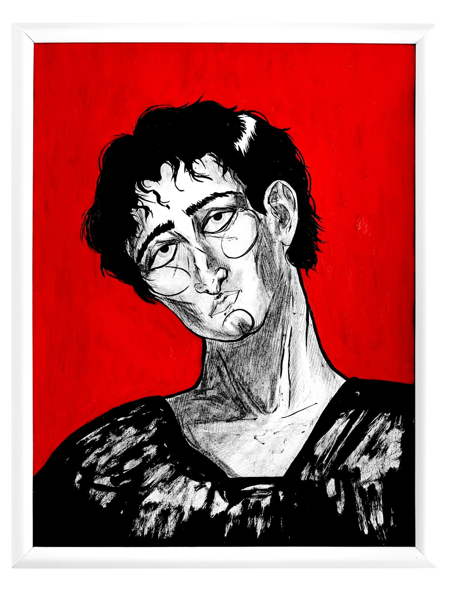
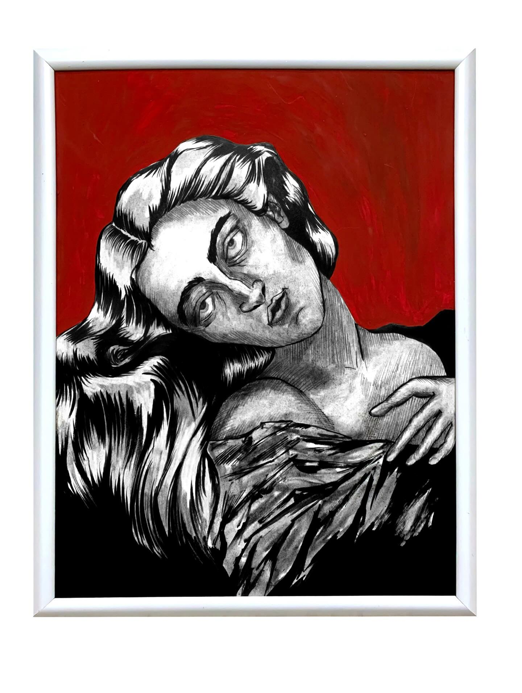
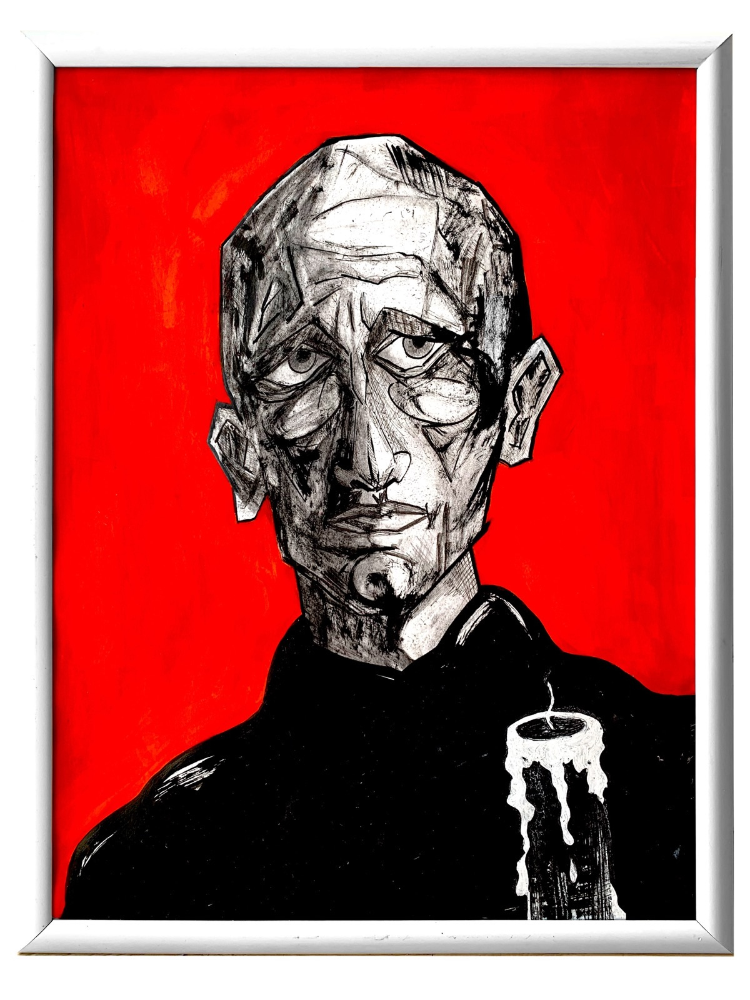
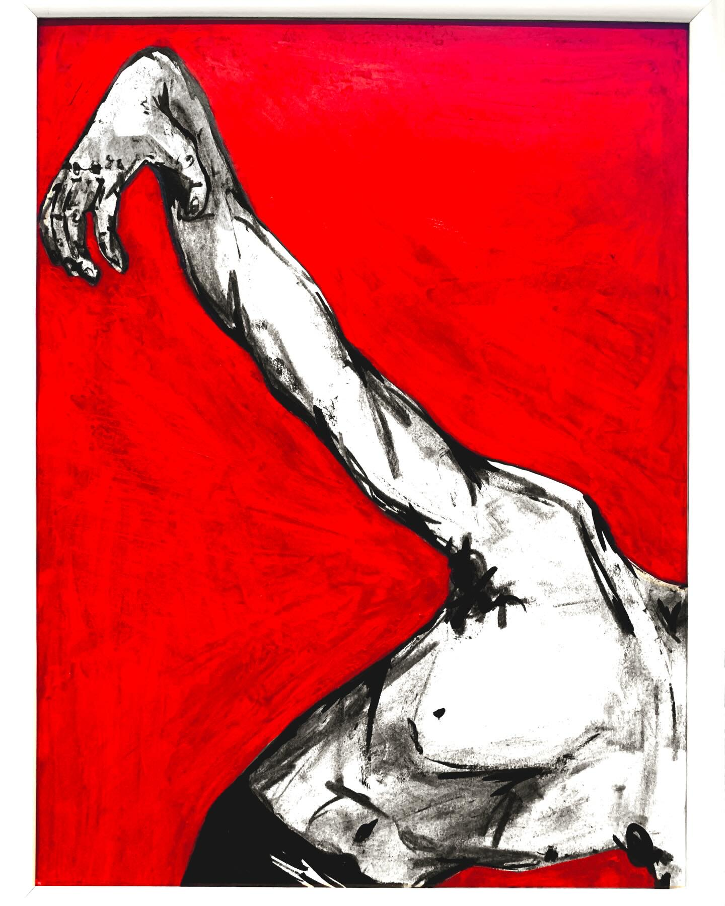
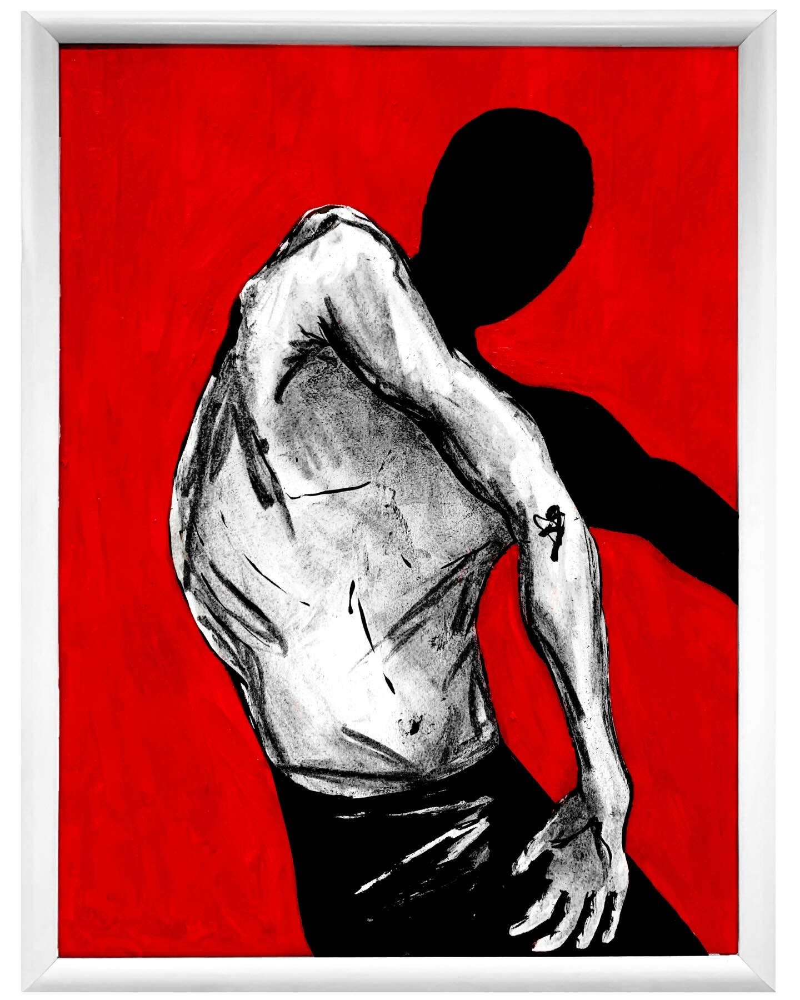
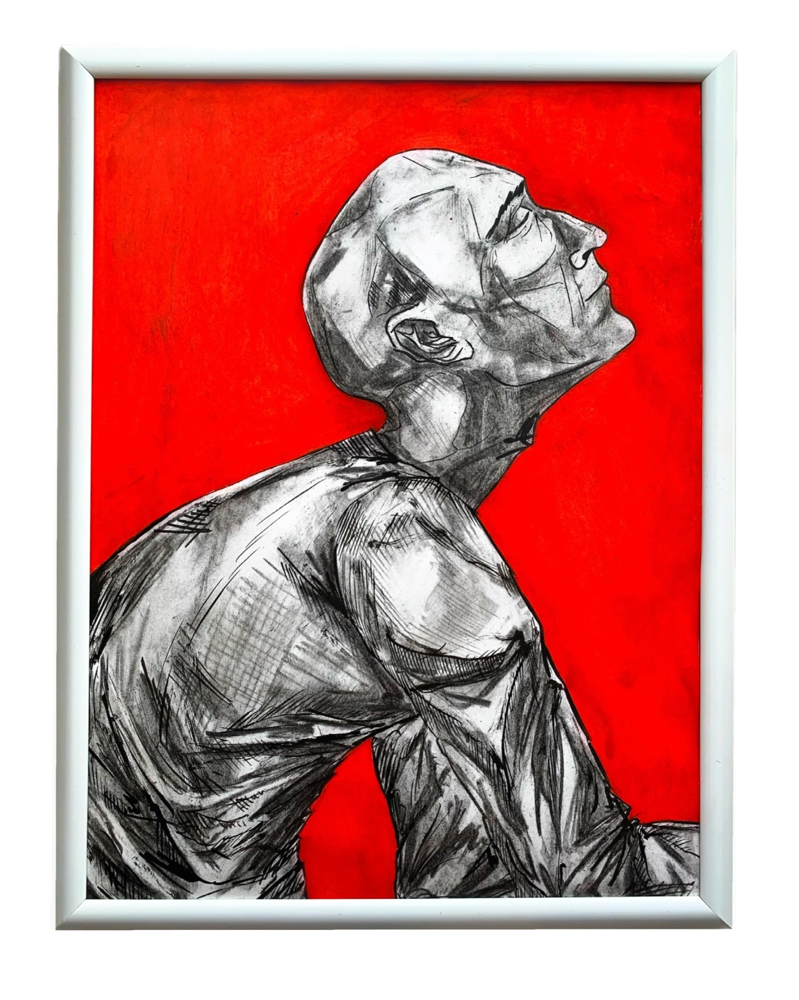
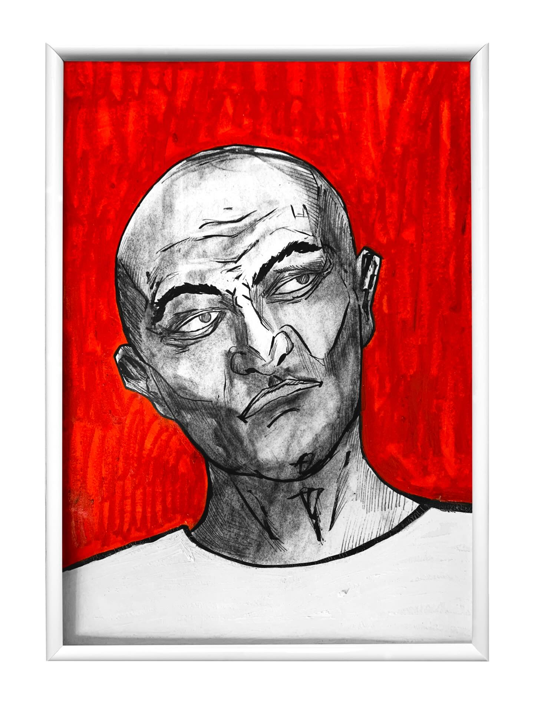
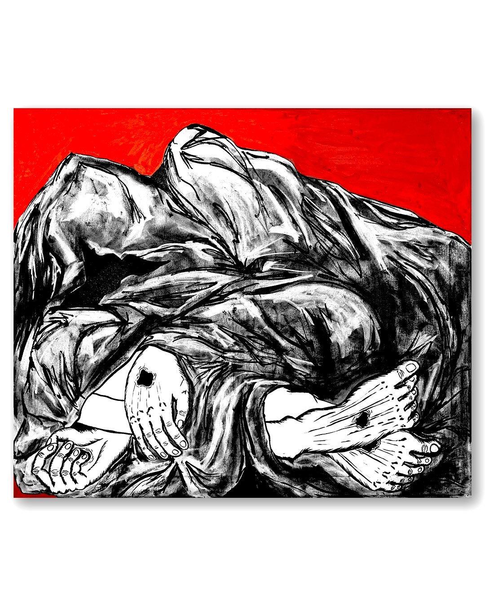
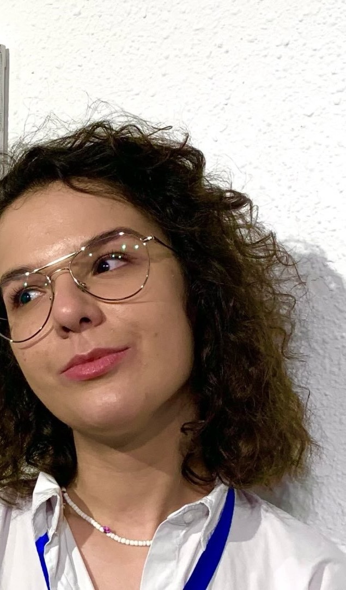

The 2026 collection
Ink · charcoal · the color red









“Loss of control doesn't arrive loudly. It arrives as disconnection — from the body, from direction, from self.” — Anna Gaikovich, Control Studies
Artist statement
In her words
My current work is drawn in ink and charcoal against a single, insistent red. I am interested in the states we pass through around control — control held too tightly, until discipline becomes suffocation; and control lost, which never arrives loudly. It arrives as disconnection — from the body, from direction, from self.
I work through archetypes — the seeker, the harlequin, the burdened sage, Hamlet and Ophelia — because they let a private feeling become a shared one. The figures are rarely portraits. They are postures: a head tilted under the weight of unexpressed feeling, an arm reaching inward as if to hold everything together at once, a body folded into the moment between resistance and surrender.
Red is the only color I allow. It is not decoration — it is pressure: the temperature of the room the figure cannot leave.

About the artist
Anna Gaikovich is a contemporary figurative artist. Raised in a multicultural corner of Eastern Europe in the early 2000s, she absorbed an unlikely mix of influences — street art and graffiti on one side, Greek sculpture and the classical canon on the other. Both still argue productively inside her work.
Trained in classical and modern art alike — a BA in Design and a Master's degree from the HSE Art and Design School — she left a career in advertising to paint full-time. Her practice draws on the legacy of abstract expressionism, Picasso's deconstruction, and the reinterpretations of Brancusi and Modigliani.
Her current body of work is drawn in ink and charcoal against a single, insistent red. Through archetypes — the seeker, the harlequin, the burdened sage — and studies of control and its loss, she maps states of inner tension: figures caught between resistance and surrender, discipline and suffocation, resentment and resolve.
- CollectionsUSA · Austria · United Kingdom
- FocusArchetypes, control, the human figure
Exhibitions & recognition
Selected
- Solo
Femininity against Idealization
Teravarna Art Gallery — Los Angeles, USA
- Solo
Artkvartal Gallery
Yerevan, Armenia
- Group
The Holy Art Gallery
London, United Kingdom
- Group
Kollektiv Gallery
Zurich, Switzerland
- Group
DANOK Gallery & Grey Cube Gallery
USA
- Award
Art Show International Gallery
Honorable Mention & Finalist — USA
- Award
Artivive AR Contest
4th place — Vienna, Austria